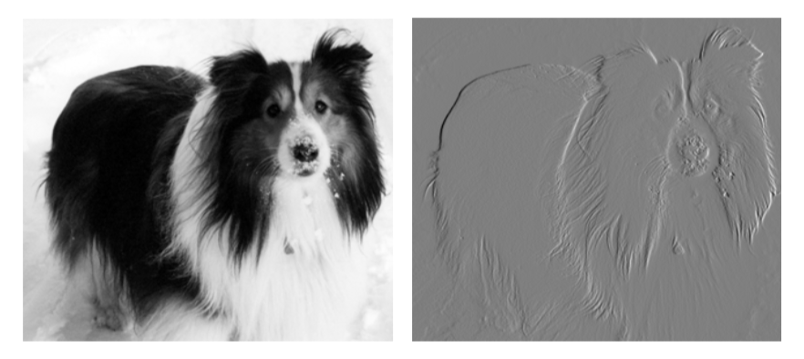
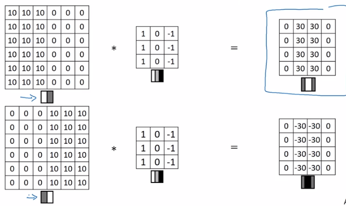

卷积运算通过三个重要的思想来帮助改进机器学习系统：稀疏交互、参数共享、等变表示。 另外，卷积提供了一种处理大小可变的输入的方法。 我们下面依次介绍这些思想。
1. 稀疏交互
[success]
每个输出与每个输入都有交互 ---> 每个输出只与核有交互，核远小于输入的数量。
传统的神经网络使用矩阵乘法来建立输入与输出的连接关系。%\footnote{译者注：这里可以粗略地理解为输入参数矩阵=输出。} 其中，参数矩阵中每一个单独的参数都描述了一个输入单元与一个输出单元间的交互。 这意味着每一个输出单元与每一个输入单元都产生交互。 然而，卷积网络具有稀疏交互（也叫做稀疏连接或者稀疏权重）的特征。 这是使核的大小远小于输入的大小来达到的。 举个例子，当处理一张图像时，输入的图像可能包含成千上万个像素点，但是我们可以通过只占用几十到上百个像素点的核来检测一些小的有意义的特征，例如图像的边缘。 这意味着我们需要存储的参数更少，不仅减少了模型的存储需求，而且提高了它的统计效率。 这也意味着为了得到输出我们只需要更少的计算量。 这些效率上的提高往往是很显著的。 如果有个输入和个输出，那么矩阵乘法需要个参数并且相应算法的时间复杂度为（对于每一个例子）。 如果我们限制每一个输出拥有的连接数为，那么稀疏的连接方法只需要个参数以及的运行时间。 在很多实际应用中，只需保持比小几个数量级，就能在机器学习的任务中取得好的表现。 稀疏连接的图形化解释如\fig?和\fig?所示。 在深度卷积网络中，处在网络深层的单元可能与绝大部分输入是\emph{间接}交互的，如\fig?所示。 这允许网络可以通过只描述稀疏交互的基石来高效地描述多个变量的复杂交互。
\begin{figure}[!htb] \ifOpenSource \centerline{\includegraphics{figure.pdf}} \else \centerline{\includegraphics{Chapter9/figures/area_of_effect}} \fi \captionsetup{singlelinecheck=off} \caption[Caption for LOF]{稀疏连接，对每幅图从下往上看。 我们强调了一个输入单元
2. 参数共享
[success]
下面这几段不知道在讲什么，Ng用人话解释了一下：
观察发现，特征检测（例如垂直特征检测），如果适用于图像的某个区域，那么它也可能适用于图像的其它区域。因此每个特征提取器都可以在输入图像的不同区域使用相同的参数，以使提取垂直边缘可其它特征。
它不仅适用于边缘特征这样的低阶特征，同样也适用于高阶特征。
参数共享是指在一个模型的多个函数中使用相同的参数。 在传统的神经网络中，当计算一层的输出时，权重矩阵的每一个元素只使用一次，当它乘以输入的一个元素后就再也不会用到了。 作为参数共享的同义词，我们可以说一个网络含有绑定的权重，因为用于一个输入的权重也会被绑定在其他的权重上。 在卷积神经网络中，核的每一个元素都作用在输入的每一位置上（是否考虑边界像素取决于对边界决策的设计）。 卷积运算中的参数共享保证了我们只需要学习一个参数集合，而不是对于每一位置都需要学习一个单独的参数集合。 这虽然没有改变前向传播的运行时间（仍然是），但它显著地把模型的存储需求降低至个参数，并且通常要比小很多个数量级。 因为 和通常有着大致相同的大小，在实际中相对于是很小的。 因此，卷积在存储需求和统计效率方面极大地优于稠密矩阵的乘法运算。 \fig?演示了参数共享是如何实现的。
\begin{figure}[!htb] \ifOpenSource \centerline{\includegraphics{figure.pdf}} \else \centerline{\includegraphics{Chapter9/figures/parameter_sharing}} \fi \caption{参数共享。 黑色箭头表示在两个不同的模型中使用了特定参数的连接。 \emph{(上)}黑色箭头表示在卷积模型中对3元素核的中间元素的使用。 因为参数共享，这个单独的参数被用于所有的输入位置。 \emph{(下)}这个单独的黑色箭头表示在全连接模型中对权重矩阵的中间元素的使用。 这个模型没有使用参数共享，所以参数只使用了一次。} \end{figure}
作为前两条原则的一个实际例子，\fig?说明了稀疏连接和参数共享是如何显著提高线性函数在一张图像上进行边缘检测的效率的。

[info] 图9.6 边缘检测的效率 右边的图像是通过先获得原始图像中的每个像素，然后减去左边相邻像素的值而形成的。 这个操作给出了输入图像中所有垂直方向上的边缘的强度，对目标检测来说是有用的。 两个图像的高度均为280个像素。 输入图像的宽度为320个像素，而输出图像的宽度为319个像素。 这个变换可以通过包含两个元素的卷积核来描述，使用卷积需要次浮点运算（每个输出像素需要两次乘法和一次加法）。 为了用矩阵乘法描述相同的变换，需要一个包含个或者说超过80亿个元素的矩阵，这使得卷积对于表示这种变换更有效40亿倍。 直接运行矩阵乘法的算法将执行超过160亿次浮点运算，这使得卷积在计算上大约有60,000倍的效率。 当然，矩阵的大多数元素将为零。 如果我们只存储矩阵的非零元，则矩阵乘法和卷积都需要相同数量的浮点运算来计算。 矩阵仍然需要包含个元素。 将小的局部区域上的相同线性变换应用到整个输入上，卷积是描述这种变换的极其有效的方法。 照片来源：Paula Goodfellow。}
[success] NG补充：卷积用于边缘检测 使用特定的kernel可以定义一个小的矩阵用于侦测一个patten提取图像的基本特征，例如垂直边缘检测：

上图使用3*3的kernel分别做左亮右暗和左暗右亮的垂直边缘检测。
矩阵中的值越大，说明原图像对应位置与patten越相似。
Ng还列了其它一些kernel，不记了。DL的kernel是自己学出来的。
3. 等变表示
[success]
平移不变性：即使移动几个像素，图像仍具有非常相似的特征，且属于相同的label。
对于卷积，参数共享的特殊形式使得神经网络层具有对平移等变的性质。 如果一个函数满足输入改变，输出也以同样的方式改变这一性质，我们就说它是等变(equivariant)的。 特别地，如果函数与满足，我们就说对于变换具有等变性。 对于卷积来说，如果令是输入的任意平移函数，那么卷积函数对于具有等变性。 举个例子，令表示图像在整数坐标上的亮度函数，表示图像函数的变换函数（把一个图像函数映射到另一个图像函数的函数）使得，其中图像函数满足。 这个函数把中的每个像素向右移动一个单位。 如果我们先对进行这种变换然后进行卷积操作所得到的结果，与先对进行卷积然后再对输出使用平移函数得到的结果是一样的\footnote{译者注：原文将此处误写成了。} 。%译者注 当处理时间序列数据时，这意味着通过卷积可以得到一个由输入中出现不同特征的时刻所组成的时间轴。 如果我们把输入中的一个事件向后延时，在输出中仍然会有完全相同的表示，只是时间延后了。 图像与之类似，卷积产生了一个2维映射来表明某些特征在输入中出现的位置。 如果我们移动输入中的对象，它的表示也会在输出中移动同样的量。 当我们知道某个相邻小规模像素的函数在不同的位置都是有用的的时候，前述性质是有用的。
例如在处理图像时，在卷积网络的第一层进行图像的边缘检测是很有用的。 相同的边缘或多或少地散落在图像的各处，所以应当对整个图像进行参数共享。 但在某些情况下，我们并不希望对整幅图进行参数共享。 例如，在处理已经通过剪裁而使其居中的人脸图像时，我们可能想要提取不同位置上的不同特征（处理人脸上部的部分网络需要去搜寻眉毛，处理人脸下部的部分网络就需要去搜寻下巴了）。
卷积对其他的一些变换并不是天然等变的，例如对于图像的放缩或者旋转变换，需要其他的一些机制来处理这些变换。
最后，一些不能被传统的由（固定大小的）矩阵乘法定义的神经网络处理的特殊数据，可能通过卷积神经网络来处理，我们将在\sec?中进行讨论。